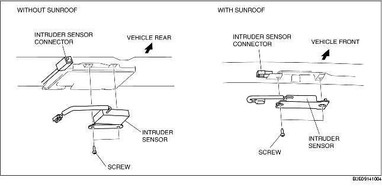

INTRUDER SENSOR REMOVAL/INSTALLATION
B3E091400172W01
1. Disconnect the negative battery cable.
2. Remove the following parts:
-
(1) Sunroof seaming welt (vehicles with sunroof)
-
(2) Console (4SD) (See CONSOLE REMOVAL/INSTALLATION.)
-
(3) A-pillar trim (See A-PILLAR TRIM REMOVAL/INSTALLATION.)
-
(4) Upper anchor of the front seat belt (See FRONT SEAT BELT REMOVAL/INSTALLATION.)
-
(5) Front scuff plate (See FRONT SCUFF PLATE REMOVAL/INSTALLATION.)
-
(6) Rear scuff plate (See REAR SCUFF PLATE REMOVAL/INSTALLATION.)
-
(7) B-pillar lower trim (See B-PILLAR LOWER TRIM REMOVAL/INSTALLATION.)
-
(8) B-pillar upper trim (See B-PILLAR UPPER TRIM REMOVAL/INSTALLATION.)
-
(9) Rear seat (See REAR SEAT REMOVAL/INSTALLATION.)
-
(10) Tire house trim (See TIRE HOUSE TRIM REMOVAL/INSTALLATION.)
-
(11) Trunk side upper trim (5HB) (See TRUNK SIDE UPPER TRIM REMOVAL/INSTALLATION.)
-
(12) C-pillar trim (See C-PILLAR TRIM REMOVAL/INSTALLATION.)
-
(13) Map light (See MAP LIGHT REMOVAL/INSTALLATION.)
-
(14) Interior light (See INTERIOR LIGHT REMOVAL/INSTALLATION.)
-
(15) Sunvisor (See SUNVISOR REMOVAL/INSTALLATION.)
-
(16) Assist handle (See ASSIST HANDLE REMOVAL/INSTALLATION.)
3. Disconnect the intruder sensor.
4. Remove the screws.

5. Remove the intruder sensor.
6. Install in the reverse order of removal.